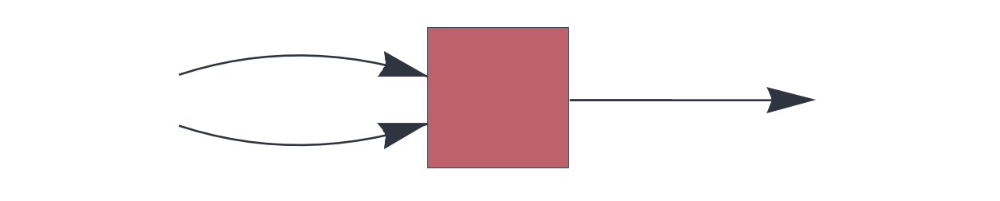
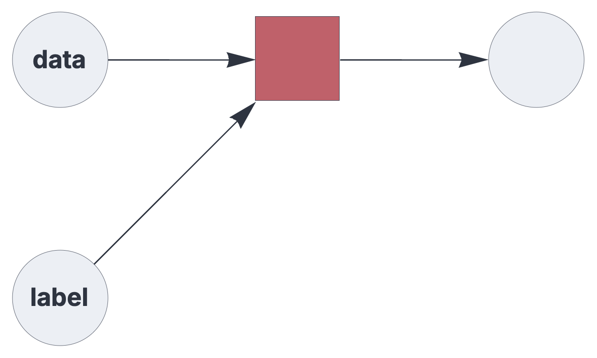
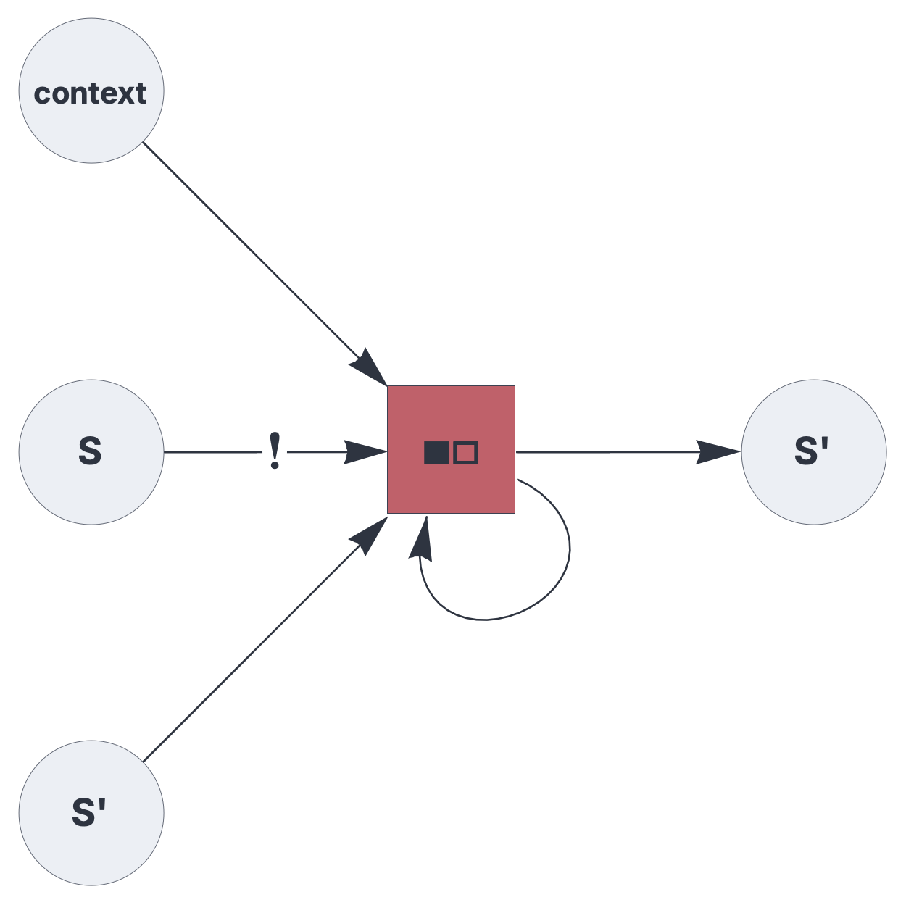

CIRCUIT COMPONENTS
associator

Hetero-associative memory component for supervised learning or state transition memories.
See also: https://creatingintelligence.org/#hetero-associative-memory
Details and properties
- Wrapper for a hetero-associative topological memory instance.
- Stores heteroassociations A -> B, where A can consist of multiple blocks
- Can represent a state transition memory {S,context} -> S’.
- Receives B from its first
receiveblock and A from the remaining blocks. - Learning is triggered if the label input is non-empty.
- Returns the retrieved set.
- Resolves multiset and inhibitory input prior to processing.
| Property | Default | Description |
|---|---|---|
send |
required | integer, representing a single output slot |
receive |
required | two or more input slots with pathway tags |
threshold |
automatic | relative pattern matching threshold |
residual |
unlimited | non-matching query elements that may be absorbed as noise, relative to the input population; 0 requires a full match |
rate_limit |
unlimited | subsample A if it exceeds the specified relative rate limit |
decimate |
1 | proportional stochastic decimation applied to A |
Use standard style options to customize the component’s appearance in circuit schematics.
Supervised learning
A basic supervised learning setup using hetero-associative memory:
{ "hyperparameters": {"default": [1000, 10]},
"dataflow": [
{"component": "input", "send": [1], "label": "label"},
{"component": "input", "send": [2], "label": "data"},
{"component": "associator", "send": [11], "receive": [1, 2]},
{"component": "output", "receive": [11]}
]}
State transition memory
The following circuit implements a state transition memory that stores {S,context} -> S’. The feedback loop enables generative operation.
{
"$schema": "https://creatingintelligence.org/schemas/circuit-v1.json",
"hyperparameters": {"default": [2000, 10]},
"dataflow": [
{"component": "input", "send": [1], "label": "S'"},
{"component": "input", "send": [2], "label": "S"},
{"component": "input", "send": [3], "label": "context", "size": 8},
{"component": "associator", "send": [11],
"receive": [1, [{"slot": 2, "tags": ["priority"]}, 11], 3],
"threshold": 0.7},
{"component": "output", "receive": [11], "label": "S'"}
]
}
Source code
def associator(config):
"""
Generic hetero-associative component.
Stores heteroassociations A -> B.
A can be block-coded.
receive: B, A1, A2, ...
send: B
If B and A1 are in the same dimensional space, this component
represents a state transition memory:
receive: S', S, C1,...
send: S'
"""
receive_blocks = config.get("receive_blocks", [])
Adims = [b[0] for b in receive_blocks[1:]]
params_A = [sum(b[0] for b in receive_blocks[1:]), sum(b[1]
for b in receive_blocks[1:])]
params_B = receive_blocks[0]
Apop = params_A[1]
# Limit size of query pattern. Applies to both storage and retrieval.
# Default: unlimited.
absratelimit = round(
Apop * config.get("rate_limit", sum(Adims) / Apop))
# Proportional stochastic subsampling, applied to the query only.
decimation = config.get("decimate", 1.0)
m_config = dict(config)
m_config.update({
"A_parameters": params_A,
"B_parameters": params_B
})
M = Memory(m_config)
# Special label for state transition memory
label = ""
if len(Adims) > 0 and \
list(receive_blocks[0]) == list(receive_blocks[1]):
label = "■" + "□" * (len(Adims) - 1)
def f(B, *blocks):
# Apply and drop inhibitory elements.
X = resolve_block_join_normal(list(blocks), Adims)
Y = resolve_normal(B)
# Limit the rate of incoming positives.
if len(X) > absratelimit:
X = sorted(
rng.choice(
X,
size=absratelimit,
replace=False).tolist())
# Always learn (does nothing if B is empty)
M["store"](X, Y)
# Proportional stochastic decimation of query pattern.
Xdec = X
if decimation < 1.0:
sample_size = math.floor(decimation * len(X))
Xdec = sorted(
rng.choice(
X,
size=sample_size,
replace=False).tolist())
if len(Xdec) < Apop:
Xdec = X
return (M["retrieve"](Xdec),)
result = {
"function": f,
"checks": ["dimfirst", "multinp", "oneout"],
"label": label, "size": 10,
"shape": "square", "fill": 11
}
result.update(M)
return result